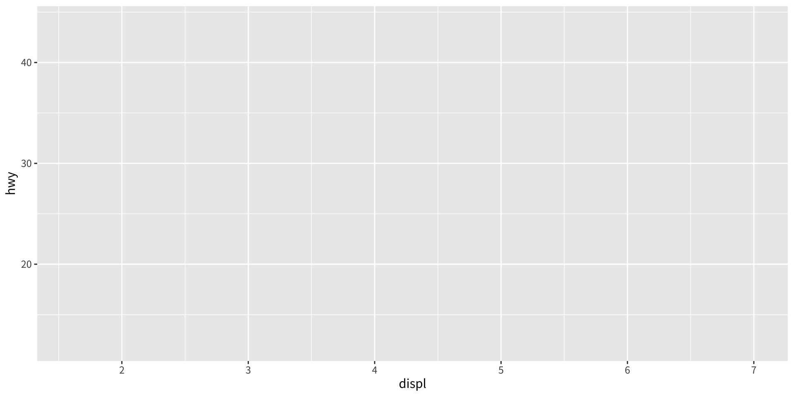
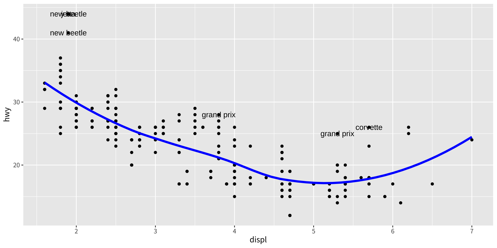
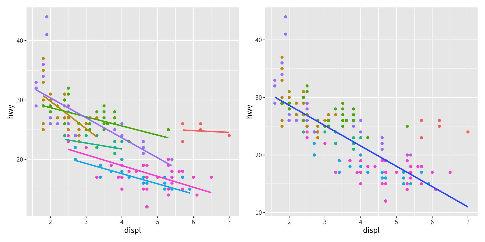
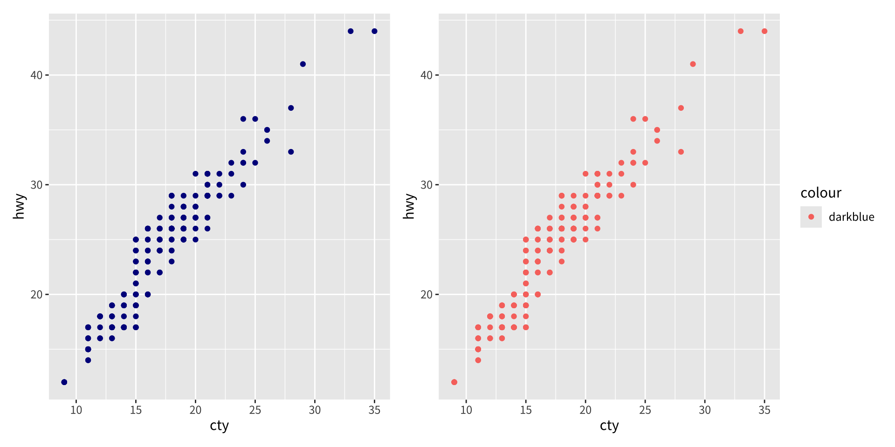
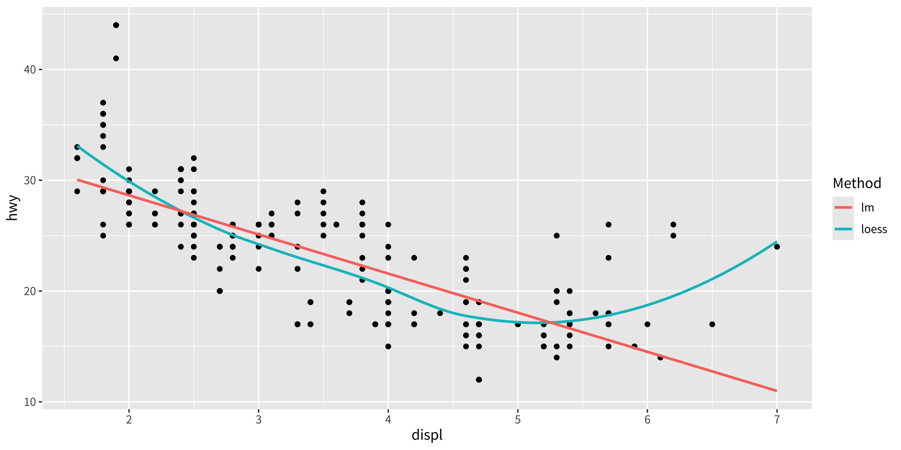
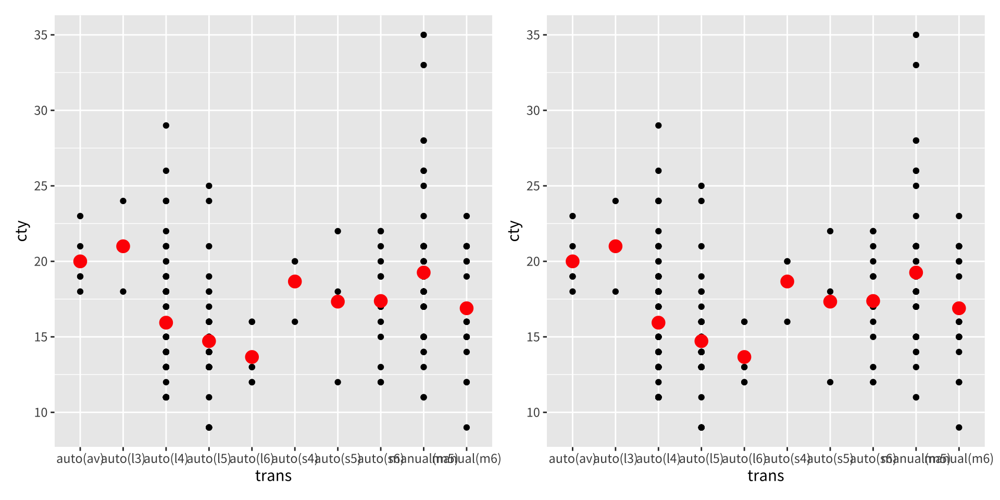
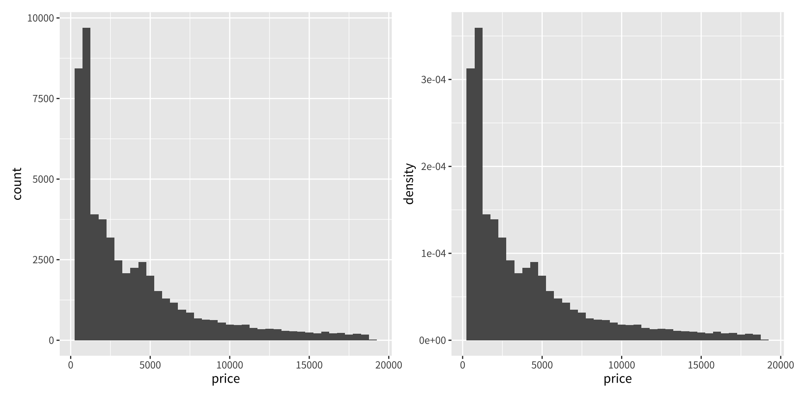
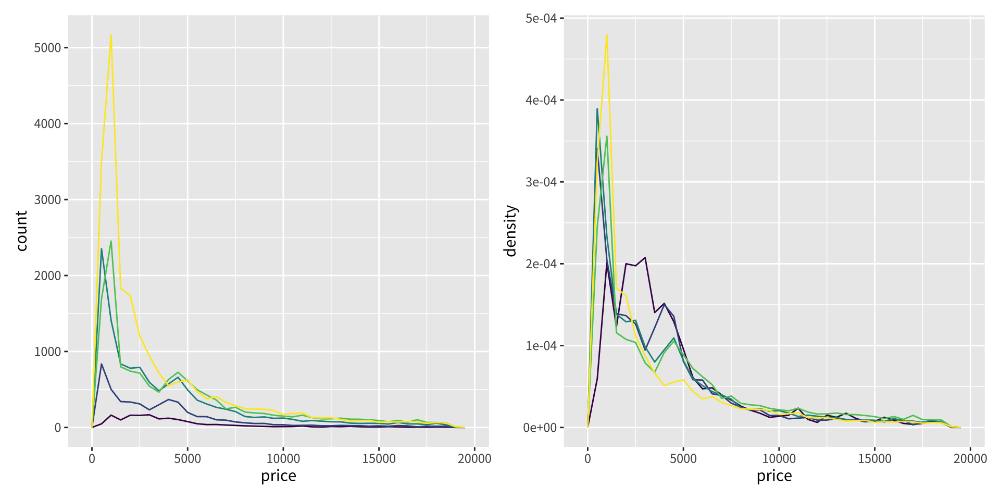
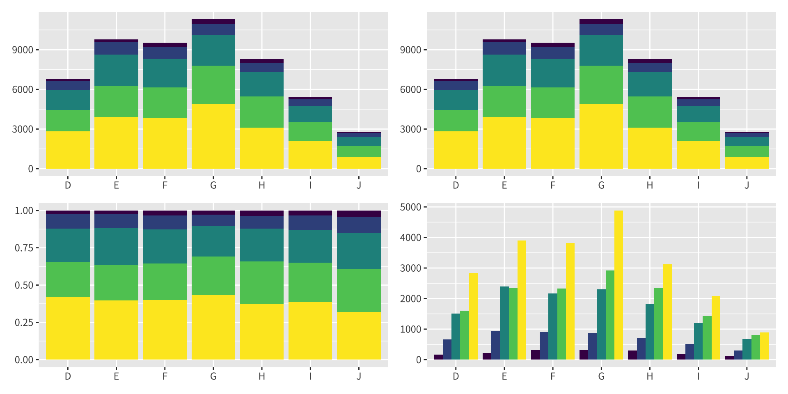
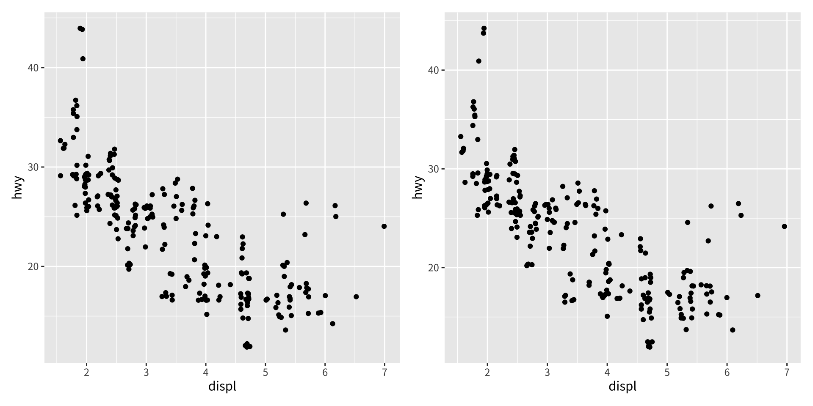

資料分析
第十三章：逐層建構圖形
實踐大學
2026-06-06
逐層建構圖形
概覽
ggplot2 背後的關鍵理念之一，是它讓你能反覆迭代，一次一個圖層地建構出複雜的圖形。每個圖層可以取用不同的資料集與不同的美學映射，因而能在單一圖形中結合來自多個來源的資料。
你已經用 geom_point()、geom_histogram() 等函式建立過圖層。本章將解剖一個圖層，並示範如何控制它的五個組成成分：
- 資料（Data）——圖層所繪製的資料框
- 美學映射（Aesthetic mappings）——變數如何連結到視覺屬性
- 幾何物件（Geom）——渲染每個觀測值的幾何物件
- 統計轉換（Stat）——繪製前所套用的統計轉換
- 位置調整（Position）——重疊元素如何被錯開
建構一張圖
兩個獨立步驟
每當我們用 ggplot() 建立圖形並立即加上一個 geom 時，其實發生了兩個獨立步驟。首先，我們用預設資料集與美學映射建立圖形：

此時還看不到任何東西——我們指定了資料與映射，但沒有用來繪製它們的幾何物件。
接著加上一個圖層讓東西顯現：

geom_point() 是一個捷徑。在幕後它呼叫 layer() 函式，建立一個五個成分都完整指定的新圖層。
明確寫出的 layer() 呼叫讓五個成分一覽無遺：
你很少會把 layer() 完整寫出，因為太冗長。geom_ 函式就是方便的捷徑：geom_point(mapping, data, ...) 完全等同於 layer(mapping, data, geom = "point", ...)。理解 layer() 仍有助於你對「圖層究竟是什麼」建立更清楚的心智模型。
資料
資料
每個圖層都必須有與之關聯的資料，且那份資料必須是整潔資料框——變數在欄、觀測值在列。這是個強限制，但有充分理由：你的資料是明確的、單一資料框易於儲存與分享，並能在「製作資料」與「視覺化資料」之間維持乾淨的分工。
關鍵在於，各圖層的資料不必相同。在一張圖中結合數個資料集往往很有用。為了說明，我們從 mpg 衍生兩個資料集：一個 loess 配適與一組離群值。
# A tibble: 6 × 3
model displ hwy
<chr> <dbl> <int>
1 corvette 5.7 26
2 grand prix 3.8 28
3 grand prix 5.3 25
4 jetta 1.9 44
5 new beetle 1.9 44
6 new beetle 1.9 41有了這些新資料集，我們便能增強原始散佈圖——疊上一條平滑線，並標註離群點。注意每個圖層都提供自己的 data =：

圖層裡需要明確的 data =，但 ggplot() 裡不需要。這是因為引數順序不同：ggplot(data, mapping) 對上 geom_*(mapping, data)。這個不一致為「資料只在 ggplot() 指定一次」的常見情況減少了打字量。
同一張圖也可以不設預設資料集、改為每個圖層各自提供資料：
當有一個主要資料集時，這種寫法較不清楚；但若沒有單一資料集居主導地位，你可能會偏好它。
美學映射
美學映射
以 aes() 定義的美學映射，描述變數如何映射到視覺屬性：
前兩個引數預設為 x 與 y，因此 aes(displ, hwy, colour = class) 等價。幾項準則：
- 在
aes()中只做簡單運算；把複雜轉換移到明確的dplyr::mutate()。 - 在
aes()內絕不要用$（例如diamonds$carat）來引用變數。這會破壞封裝，並在 ggplot2 重排列順序時（如分面時）出錯。
圖層 vs. 整圖的美學
映射可在 ggplot()、個別圖層、或兩者皆提供。下列各式產生相同的規格：
在圖層內，你可以新增、覆寫或移除映射：
| 操作 | 圖層美學 | 結果 |
|---|---|---|
| 新增 | aes(colour = cyl) |
aes(displ, hwy, colour = cyl) |
| 覆寫 | aes(y = cty) |
aes(displ, cty) |
| 移除 | aes(y = NULL) |
aes(displ) |
一旦加入多個圖層，這個區別就很重要。下面兩張圖都有效，但強調的重點不同——左圖把點與平滑線都依 class 上色，右圖只把點上色：
library(patchwork)
p1 <- ggplot(mpg, aes(displ, hwy, colour = class)) +
geom_point() + geom_smooth(method = "lm", se = FALSE) +
theme(legend.position = "none")
p2 <- ggplot(mpg, aes(displ, hwy)) +
geom_point(aes(colour = class)) + geom_smooth(method = "lm", se = FALSE) +
theme(legend.position = "none")
p1 | p2
設定 vs. 映射
除了把美學映射到變數，你也可以把它設定為單一常數值，作為圖層參數。規則是：
- 要讓外觀由變數決定 → 放在
aes()內。 - 要覆寫固定的顏色或大小 → 把值放在
aes()外。

上面第二張圖把顏色映射到字面字串 "darkblue"。這建立了一個只有一個水準的變數，預設離散尺度將它渲染成偏粉紅的色調——幾乎一定不是你想要的。
不過，映射到常數對於為圖層命名、使其出現在圖例中，是真正有用的：

幾何物件
幾何物件
幾何物件（geom）負責圖層的實際渲染，並決定圖形的類型。點 geom 做出散佈圖；線 geom 做出折線圖。ggplot2 內建龐大的 geom 詞彙，依其所顯示的變數數目組織：
- 圖形基元：
geom_blank()、geom_point()、geom_path()、geom_ribbon()、geom_segment()、geom_rect()、geom_polygon()、geom_text() - 單變數：
geom_bar()、geom_histogram()、geom_density()、geom_dotplot()、geom_freqpoly() - 雙變數：
geom_point()、geom_smooth()、geom_boxplot()、geom_bin2d()、geom_hex()、geom_count()、geom_jitter()、geom_area()、geom_line()、geom_step() - 三變數：
geom_contour()、geom_tile()、geom_raster()
每個 geom 都理解一組美學，其中有些是必需的。點需要 x 與 y，並理解 colour、size、shape；長條需要高度（ymax），並理解 width、邊框顏色與填色。
有些 geom 的差別主要在於參數化方式。你可以用三種方式畫同一個方塊：
| Geom | 參數化 |
|---|---|
geom_tile() |
位置（x、y）+ 尺寸（width、height） |
geom_rect() |
四角（xmin、xmax、ymin、ymax） |
geom_polygon() |
一個含四個角 x/y 位置的四列資料框 |
挑選與你資料相符的參數化，通常能讓圖容易得多。
統計轉換
統計轉換
統計轉換（stat）會轉換資料——通常是加以摘要。許多熟悉的 geom 在幕後都由某個 stat 驅動：
| Stat | Geoms |
|---|---|
stat_bin() |
geom_bar()、geom_freqpoly()、geom_histogram() |
stat_bin2d() |
geom_bin2d() |
stat_boxplot() |
geom_boxplot() |
stat_smooth() |
geom_smooth() |
stat_sum() |
geom_count() |
其他 stat 沒有 geom_ 捷徑，如 stat_ecdf()、stat_function()、stat_summary()、stat_qq()、stat_unique()。
你可以加一個 stat_() 並覆寫其 geom，或加一個 geom_() 並覆寫其 stat。兩者都產生相同的紅色平均值標記：

第二種寫法較佳：它清楚表明你顯示的是摘要，而非原始資料。
生成變數
stat 接受一個資料框、回傳一個資料框，往往會新增新變數讓你映射到美學。例如 stat_bin()（直方圖所用）會生成 count、density、x。要映射生成變數，把它的名稱包在 after_stat() 裡：

after_stat() 可避免在原始資料已含同名變數時造成混淆，並向任何讀者表明該變數是由 stat 生成的。
標準化為密度，對於比較大小差異懸殊的群組特別有用。比較 cut 內 price 的計數與密度：

密度視圖揭示了一個意外：低品質鑽石平均看起來更貴。
位置調整
位置調整
位置調整對圖層內元素的位置施加微調。三種主要用於長條：
position_stack()——把重疊長條相疊（長條的預設）position_fill()——相疊並重新縮放，使每根長條都達到 1position_dodge()——把重疊長條並排

還有一個什麼都不做的 position_identity()。它對長條無用（每根都遮住後面的），但對線等不需調整的 geom 沒問題。
三種位置調整主要用於點：
position_nudge()——把點移動一個固定偏移量position_jitter()——對每個位置加入隨機雜訊position_jitterdodge()——在組內錯開，再加入雜訊
位置調整傳遞參數的方式與 stat、geom 不同：你建構一個位置物件，並把引數提供給它。

冗長的寫法有捷徑：geom_jitter(width = 0.05, height = 0.5)。抖動對離散資料最有用，因為精確重疊很常見。
練習
ggplot()的前兩個引數是data然後mapping；而所有圖層函式的前兩個引數是mapping然後data。為什麼順序不同？這告訴你最常設定的是什麼？用
geom_line(data = grid)與geom_text(data = outlier)，重現 §13.3 的增強版mpg散佈圖。然後改寫成在每個圖層各自指定資料、而非在ggplot()指定。解釋
geom_point(colour = "darkblue")與geom_point(aes(colour = "darkblue"))的輸出差異。加上scale_colour_identity()如何改變後者？
預設直方圖把長條高度映射到
count。改寫成使用after_stat(density)，並說明各自在何時適用。在
ctyvstrans的散佈圖上疊一個紅色「平均值」標記，一次用stat_summary(geom = "point", ...)、一次用geom_point(stat = "summary", ...)。哪種寫法更清楚地傳達意圖？用
diamonds為color內的cut建立堆疊、填充、並排三種長條圖。各位置調整何時最有用？對過度重疊的離散資料，為什麼你可能用
geom_jitter()而非geom_count()？各有何取捨？
版權聲明
版權聲明。 本教材改編自 ggplot2: Elegant Graphics for Data Analysis (3e)。所有權利均由原作者與出版者保留。
僅供非商業用途。 本教材嚴格限定用於教育目的，不得用於商業獲利。
適當標註出處。 任何對本教材的重製、散布或使用，都必須適當標註原始出處。

ggplot2: Elegant Graphics for Data Analysis